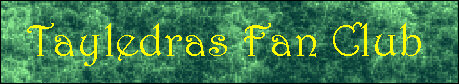
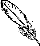

For those without Java-capable browsers:
*** Welcome to the Tayledras Fan Club! ***
Welcome!
Note: all material on this web site is based on the Tayledras, and therefore
copyright of Mercedes Lackey, 1997. The author of this web site respects Mercedes
Lackey's position against "floating fan fiction" and supports it fully. No fan fiction
contained herein can be uploaded to any other web site, BBS, or other Internet
location, and cannot be distributed or altered without both the author's AND
Mercedes Lackey's express permission.
What is this place?
This is the Tayledras Fan Club web site.
Um, great. What is the Tayledras Fan Club?
The TFC is a club devoted entirely to the Tayledras
from Mercedes Lackey's Heralds of Valdemar books.
What can I find here?
Fan fiction, information about the Tayledras, information
about the club and how to join, and a couple of projects.
What's so great about joining?
As a nonmember, you can view the information, stories,
etc. freely, but only members can actually submit things. Also, only the
members can participate in the projects.
Sounds good! How do I join?
To join, click on this link,
close your eyes, and be imaginative.
Tayledras Profile Form
It's free to join, and there are NO dues. The only thing asked of members
is that they participate in various club activities, including the projects.
What ARE these projects?
Project
Number One: The Tayledras Language Project. As time passes, all members
will be contributing to the construction of a complete Tayledras
language. Some members will do more than others, but ALL members will contribute
at least one word.
Project
Number Two: The Tayledras Clan Project. All members of the Tayledras
Fan Club will also be members of a simulated Tayledras Clan. This Clan,
Clan K'ryss, will replicate the goings-on of a "real" Tayledras Clan
exactly. Members will take use-names, which will be used in place of their
real names. The first 5 members will also become Elders, to participate
in the Clan Council. Also, some of the fan fiction will be based on this
Clan.
The Tayledras Archive
Clan K'ryss